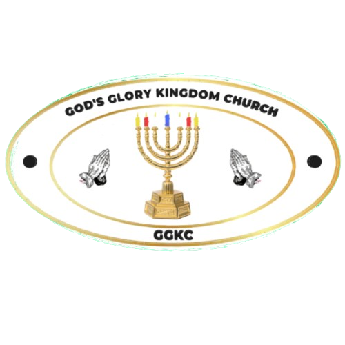

This website is intended for admin use and basic church info details.
Every Sunday we gather together to worship, to hear the Word, and to grow in faith as a community. All are welcome — bring your family, bring a friend.
plot 279, Road 6, Orchards, Walkerville
Doors open at 9:30 AM. Come early and settle in.
Every Sunday, We meet weekly. Come once and experience the warmth of our congregation.
Come Worship With Us
We are located in Walkerville, De Deur — accessible from the greater Johannesburg area. We look forward to seeing you.
279 Apple Orchards Walkerville, De Deur Johannesburg, South Africa